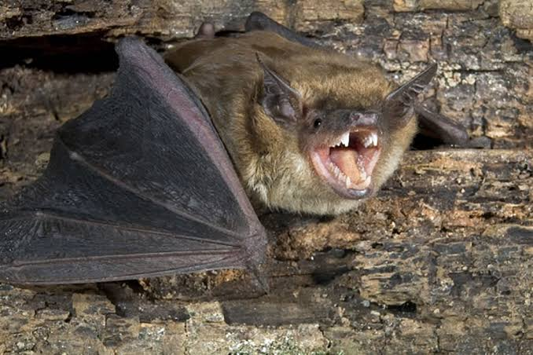

Bats are integeral parts of our forest and prarie ecosystems, they are one of my favorite animals. I got the chance to study them over the summer, so I'd like to share my knowledge of Illinois bats.
There are many cool things about bats, such as they dont only use echolocation for navigating their surroundings. Many local bat species use echolocation calls socially, wether its to warn neigbors, find mates or even to tell other species to stay away from a feeding location
